Fiberglas gövde
Ekobox L220 yuvarlatılmış köşeleri ve tek parça hissi veren beyaz fiberglas kabuğuyla kompakt bir mobil mutfak. Stüdyo görünüşleri oranı, satış penceresini ve şaseyi sade biçimde okutur.
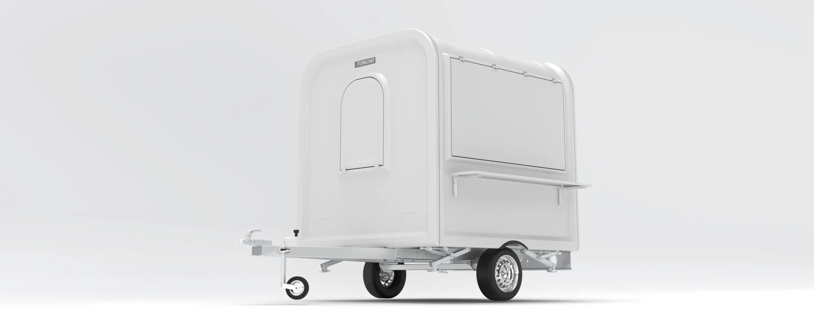
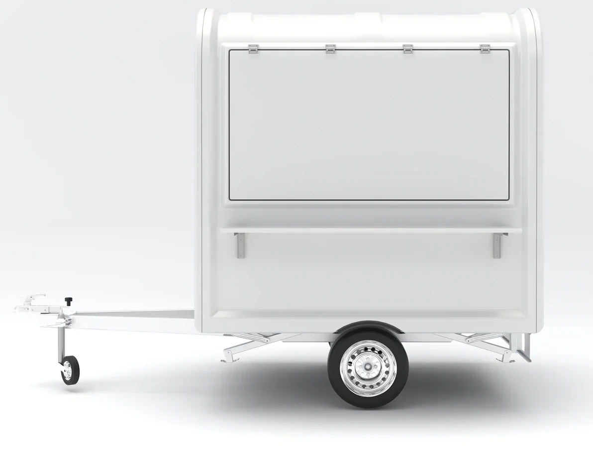
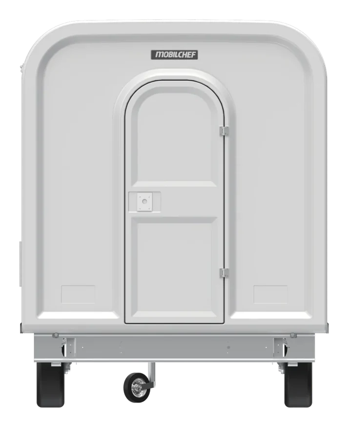
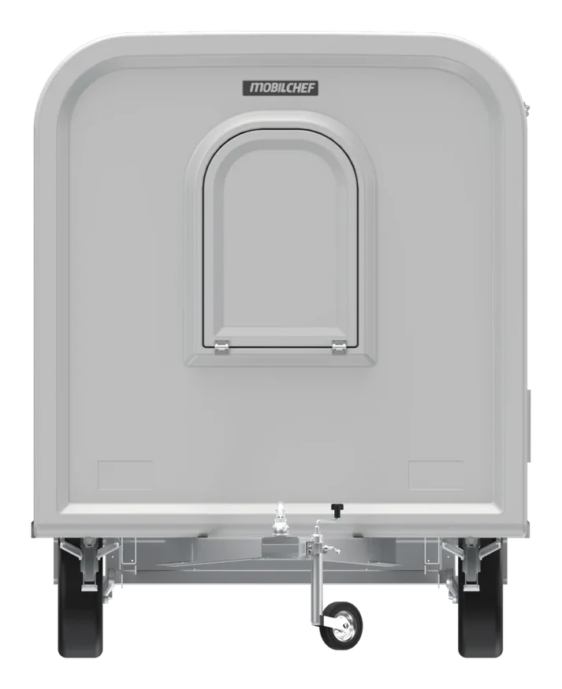
Alternatif yüzey karakteri
Aynı oranlar üzerinde koyu çerçeveli, metal görünümlü bir kabuk denendi. Kentsel sahnelerde ünite park halinde, çekiş konumunda ve yandan görülür.
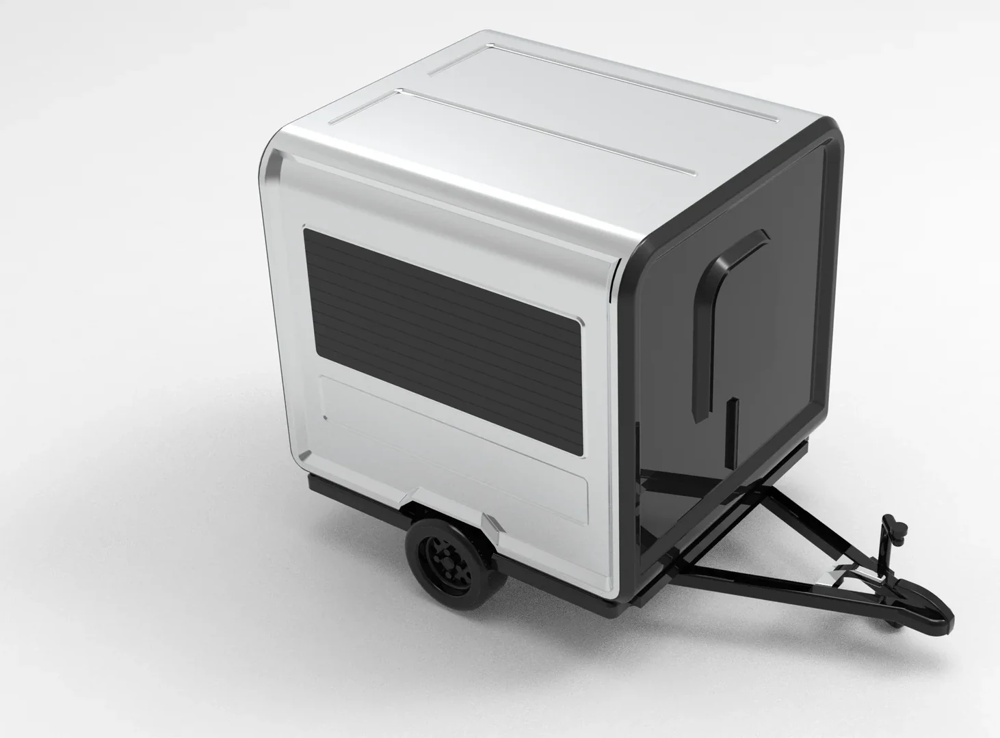

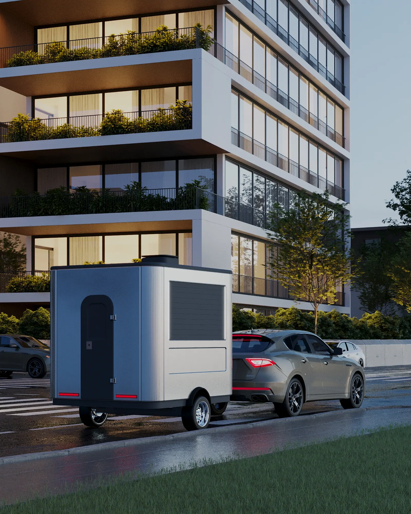
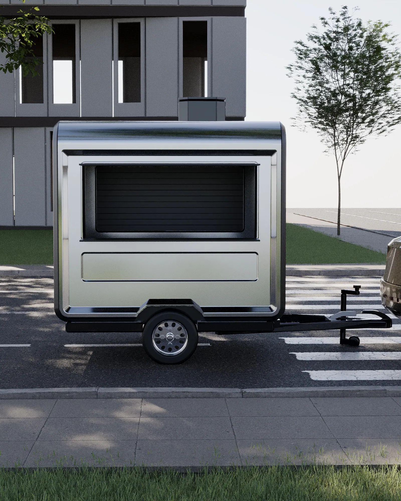
Açılır satış paneli
Üstten açılan panel hem satış penceresini açar hem de servis alanına gölge veren bir tente olur. Kapalı ve açık durum aynı açıdan karşılaştırılabilir.
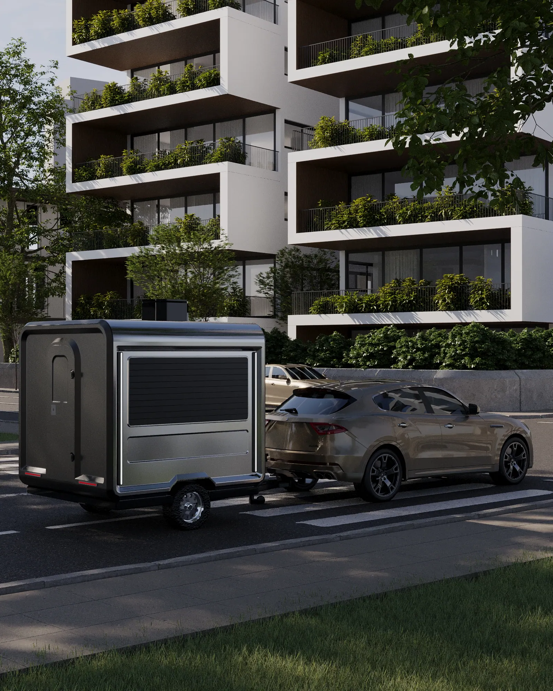
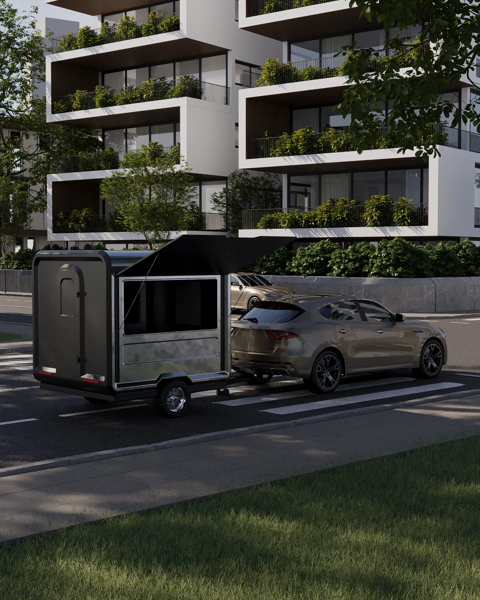
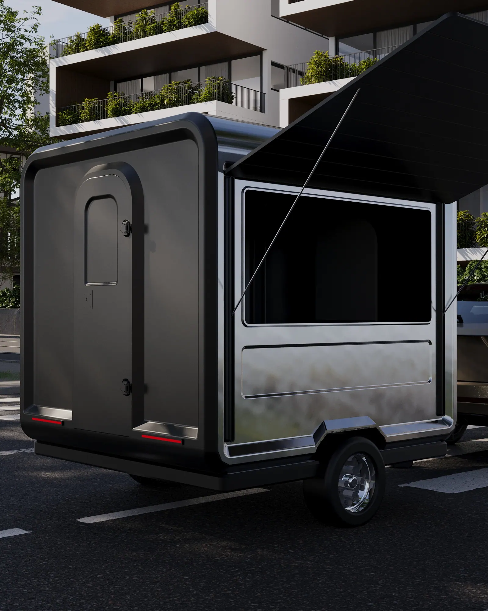
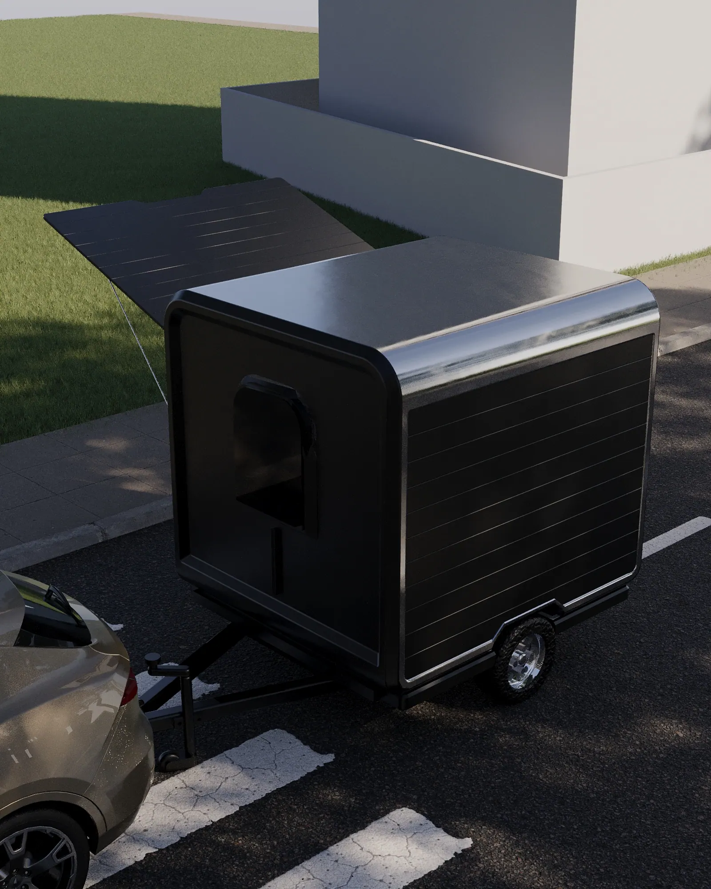